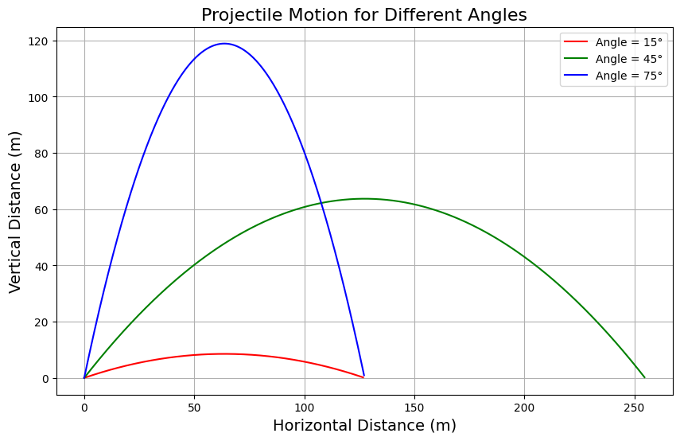

üõ∞Ô∏è Problem 1 ‚Äì Investigating the Range as a Function of the Angle of Projection
Physics | Mechanics | KW1 Assignment
Author: Bartu867
Date: March 29, 2025
üéØ Goal
Simulate and analyze the possible trajectories of a projectile launched at different angles.
Determine how the range depends on the angle of projection and calculate the range for different initial velocities.
üìò Theoretical Background
Projectile motion can be described by the following equations. The horizontal range of a projectile, ignoring air resistance, is given by:
Where: - \( v_0 \) is the initial velocity - \( \theta \) is the angle of projection - \( g \) is the gravitational acceleration
In the case of air resistance, the equation becomes more complicated and requires numerical methods to solve.
üíª Python Simulation

```python import numpy as np import matplotlib.pyplot as plt
Constants
g = 9.81 # gravitational acceleration (m/s^2)
Function to calculate the range
def calculate_range(v0, theta): return (v0 ** 2 * np.sin(2 * np.radians(theta))) / g
Range calculation without air resistance
theta_values = np.arange(0, 91, 1) # Angle range from 0 to 90 degrees v0 = 100 # Initial velocity in m/s ranges = calculate_range(v0, theta_values)
Plotting the range vs. angle
plt.figure(figsize=(8, 6)) plt.plot(theta_values, ranges, label='Range (No Air Resistance)', color='orange') plt.xlabel('Angle of Projection (degrees)') plt.ylabel('Range (meters)') plt.title('Range of a Projectile as a Function of Launch Angle') plt.grid(True) plt.legend() plt.tight_layout() plt.show()
Additional code for air resistance simulation
def simulate_projectile_with_air_resistance(v0, theta, k, m): # Initial conditions x0, y0 = 0, 0 vx0 = v0 * np.cos(np.radians(theta)) vy0 = v0 * np.sin(np.radians(theta))
# Time settings
dt = 0.01
t_max = 200
t_values = np.arange(0, t_max, dt)
# Arrays to store positions
x_values = np.zeros(len(t_values))
y_values = np.zeros(len(t_values))
vx_values = np.zeros(len(t_values))
vy_values = np.zeros(len(t_values))
x_values[0], y_values[0] = x0, y0
vx_values[0], vy_values[0] = vx0, vy0
for i in range(1, len(t_values)):
# Air resistance
ax = -k * vx_values[i-1] / m
ay = -g - (k * vy_values[i-1] / m)
# Update velocities and positions
vx_values[i] = vx_values[i-1] + ax * dt
vy_values[i] = vy_values[i-1] + ay * dt
x_values[i] = x_values[i-1] + vx_values[i] * dt
y_values[i] = y_values[i-1] + vy_values[i] * dt
# Break if projectile hits the ground
if y_values[i] < 0:
break
return x_values, y_values
Simulate projectile with air resistance
k = 0.1 # Drag coefficient m = 1 # Mass of the projectile x_vals, y_vals = simulate_projectile_with_air_resistance(v0, 45, k, m)
Plotting the trajectory with air resistance
plt.figure(figsize=(8, 6)) plt.plot(x_vals, y_vals, label='Projectile Trajectory (with Air Resistance)', color='blue') plt.xlabel('Distance (meters)') plt.ylabel('Height (meters)') plt.title('Projectile Trajectory with Air Resistance') plt.grid(True) plt.legend() plt.tight_layout() plt.show()